vignettes/single_cell_rnaseq_practical.Rmd
single_cell_rnaseq_practical.RmdThis vignette continues from Part 1, where we introduced the basic concepts behind an analysis of single-cell RNA-seq data using a topic model, and showed how the topic model analysis can be implemented in fastTopics. Here we revisit the same example data set, giving more detailed guidance, and discussing a few complications that may arise as you consider larger or more complex data sets. We illustrate a few strategies that could be helpful for improving your results, creating effective visualizations and extracting interesting biological insights.
We begin our analysis by loading the packages. Then we set the seed so that the results can be reproduced.
Now we load the data set and the \(K = 6\) pre-fitted topic model.
data(pbmc_facs) counts <- pbmc_facs$counts fit <- pbmc_facs$fit
The topic model was fitted using the fit_topic_model function. This function, as we mentioned, hides most of the complexities of model fitting. Nevertheless, it is a good idea to check that the model fitting has converged to a maximum-likelihood solution. This can be easily done in fastTopics:
plot_progress_poisson_nmf(fit,x = "iter",add.point.every = 10, colors = "black") + theme_cowplot(font_size = 10)
Internally, fit_topic_model first fits a non-negative matrix factorization to the count data, then converts the fitted NMF to a topic model, so the plot shows the improvement in the NMF model fit over time (improvement is measured by the NMF likelihood, not the multinomial topic model likelihood). Judging by this plot, the parameter estimates get close to a maxium-likelihood solution after about 150 updates.
For larger or more complex data sets, more than 200 updates may be needed to obtain a good fit. For guidance on fine-tuning the model fitting, refer to the documentation for fit_topic_model and fit_poisson_nmf.
The topic model can be used to calculate a likelihood for each cell.
loglik <- loglik_multinom_topic_model(counts,fit)
This can be used to assess how well the topic model “fits” each cell.
pdat <- data.frame(loglik) ggplot(pdat,aes(loglik)) + geom_histogram(bins = 64,color = "white",fill = "black") + labs(y = "number of cells") + theme_cowplot(font_size = 10)
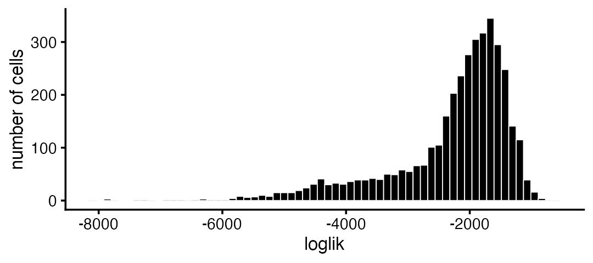
Most of the poorly fit cells are in the CD34+ subpopulation:
subpop_colors <- c("dodgerblue","forestgreen","darkmagenta","skyblue","gold") pdat <- data.frame(loglik = loglik,subpop = pbmc_facs$samples$subpop) ggplot(pdat,aes(x = loglik,fill = subpop)) + geom_histogram(bins = 64,color = "white") + scale_fill_manual(values = subpop_colors) + labs(y = "number of cells") + theme_cowplot(font_size = 10)
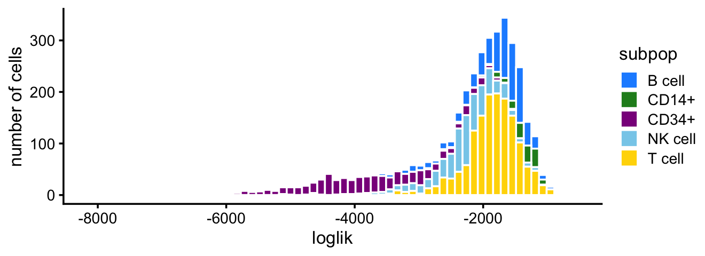
In Part 1, we made use of additional information about the cells to help us interpret the topics. In some cases, however, we may not have the benefit of external information to guide our explorations. In this section, we illustrate the de novo discovery of structure using a topic model.
Without the cell labels, the Structure plot can still be quite effective:
topic_colors <- c("skyblue","forestgreen","darkmagenta","dodgerblue", "gold","darkorange") structure_plot(fit,topics = 1:6,colors = topic_colors)
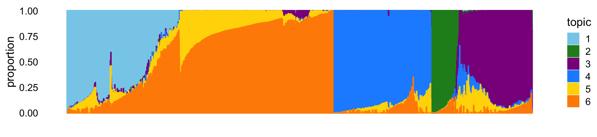
From this Structure plot, we see the clustering of the cells into B cells (dark blue), CD14+ monocytes (green) and CD34+ cells (purple). The clustering of the NK (light blue) and T cells (mixtures of yellow and orange) is less distinct, and this is reflected by more sharing of topics (mostly topic 6) among NK and T cells.
Of course, without the cell labels, we cannot know that the topics correspond to these cell types without further downstream analyses—for this, we will perform a differential expression analysis (continue reading).
In more complex data sets, some types of fine scale structure, or rare cell types, may not show up well in the Structure plot, at least without additional fine-tuning of the plot.
One simple strategy we have found to be generally helpful is to first identify clusters in the mixture proportions matrix, \(L\). Here, we illustrate this idea using k-means. Specifically, we apply \(k\)-means to the principal components (PCs) of the mixture proportions.
We previously experimented with different numbers of clusters and we found that 6 clusters worked best. Note that k-means can be sensitive to (random) initialization, so we set the seed before running k-means to ensure that the output is reproducible.
set.seed(1) pca <- prcomp(fit$L)$x clusters <- kmeans(pca,centers = 6,iter.max = 100)$cluster summary(factor(clusters)) # 1 2 3 4 5 6 # 400 207 1047 797 616 707
Now we create another Structure plot in which the cells are organized by their membership to the 6 clusters:
structure_plot(fit,topics = 1:6,colors = topic_colors, grouping = factor(clusters),gap = 25)
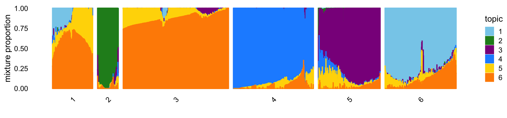
Judging by the Structure plot, the k-means clusters look sensible, the one exception being that the T cells (cells with high proportions of topics 5 and 6) seem to be rather arbitrarily split into clusters 1 and 3. Therefore, we merge these two clusters:
clusters[clusters == 3] <- 1 clusters <- factor(clusters)
We have found that visual inspection of the clusters followed by manual refinement is often be needed to get the “right” clustering.
With the benefit of hindsight, we know that these 5 clusters correspond to 5 cell types: B cells, T cells, natural killer (NK) cellls, CD14+ monoytes and CD34+ cells. For clarity of presentation, we label the clusters by these cell types, noting that, in most practical settings, labeling the clusters is usually not possible until downstream analyses have been performed.
levels(clusters) <- c("T","CD14+","B","CD34+","NK") structure_plot(fit,topics = 1:6,colors = topic_colors, grouping = clusters,gap = 25)
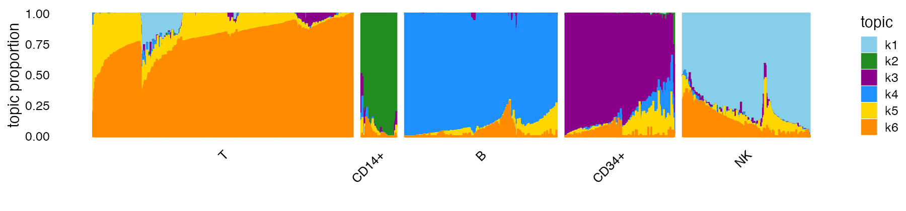
This new Structure plot better highlights the heterogeneity within the clusters, particularly in the T cells. Within the T cells cluster, there is distinctive subset of cells with contributions from topic 1 (the “NK cells” topic, in light blue).
For clustering, it is also sometimes helpful to visualize the clusters in PCA plots which show the projection of the cells onto PCs of the mixture proportions:
cluster_colors <- c("gold","forestgreen","dodgerblue","darkmagenta","skyblue") pca_plot(fit,fill = clusters) + scale_fill_manual(values = cluster_colors)
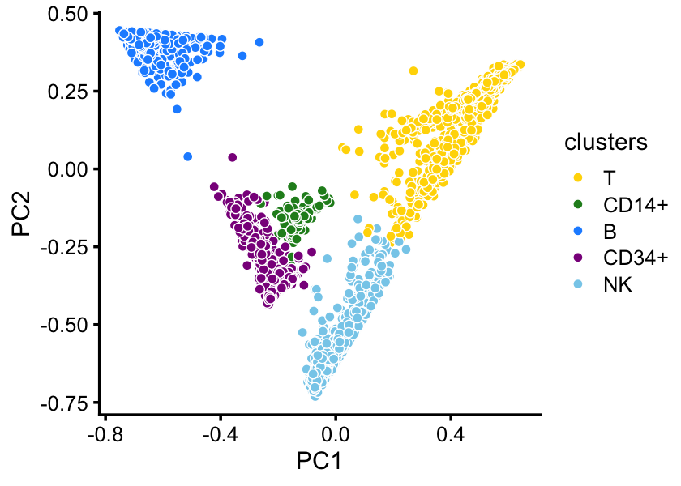
(Note that the CD14+ and CD34+ cells separate better in PCs 3 and 4.)
When there are many overlapping points, as is the case here, a plotting instead the density of the points can show the clustering more clearly:
pca_hexbin_plot(fit,bins = 24)
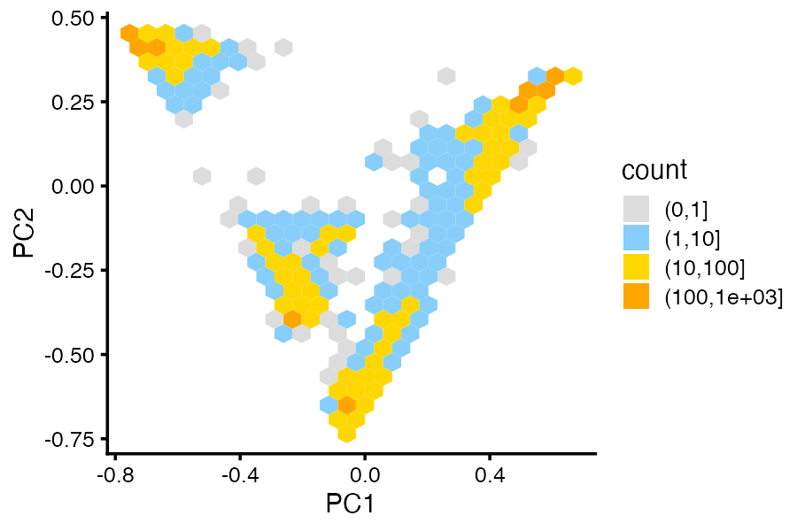
In particular, the separation of the T cells and NK cells into two clusters is more clear in the density (“hexbin”) plot.
This example is only meant to illustrate clustering of the cells by the estimated mixture proportions; k-means may not be the best clustering technique for all data sets. For more complex data sets, some ingenuity may be needed to identify and visualize clusters.
In Part 1, we performed a differential expression analysis using the topic model, and using the results of this analysis we were able to interpret topic 1 as NK cells and topic 4 as B cells. Here, we use perform differential expression analysis to tackle interpretation of the topics that capturing variation in the T cells cluster.
Unlike the B cells and NK cells, expression in T cells is captured by mixtures of two topics. To isolate T-cell-specific expression patterns, we perform differential expression analysis on the combined topic:
genes <- pbmc_facs$genes fit_merged <- merge_topics(fit,5:6) dfa_merged <- diff_count_analysis(fit_merged,counts) volcano_plot(dfa_merged,k = "k5+k6",label_above_quantile = 0.998, labels = genes$symbol,max.overlaps = 16)
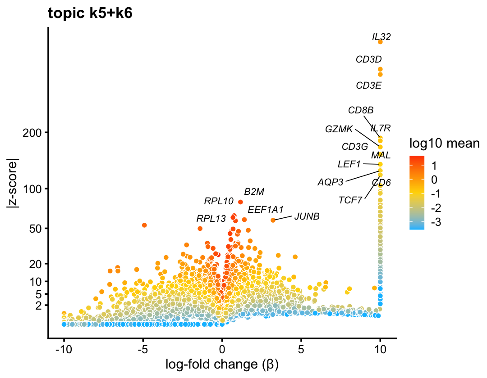
In the volcano plot, the T-cell marker gene CD3D is one of the top genes.
When the volcano plot shows many overlapping differentially expressed genes, like it does here, it can be helpful to explore the results interactively. The function volcano_plotly creates an interactive volcano plot that can be viewed in a Web browser:
p1 <- volcano_plotly(dfa_merged,k = 5,file = "volcano_plot_t_cells.html", labels = genes$symbol)
This call creates a new file volcano_plot_t_cells.html. The interactive volcano plot can also be viewed here, or by calling print(p1) in your R session.
Within the T cell cluster, there is a distinctive subset of cells with sizeable contributions from the “NK cells” topic (that is, topic 1, shown in light blue in the Structure plot). This subset of cells sits in between the dense clumps of NK and T cells in the PCA plots above. To highlight this subset of cells—which turn out to be CD8+ cells, as we will see shortly—we define a new cluster:
clusters <- as.character(clusters) clusters[clusters == "T" & fit$L[,1] > 0.1] <- "CD8+" clusters <- factor(clusters) structure_plot(fit,topics = 1:6,colors = topic_colors, grouping = factor(clusters),gap = 25)
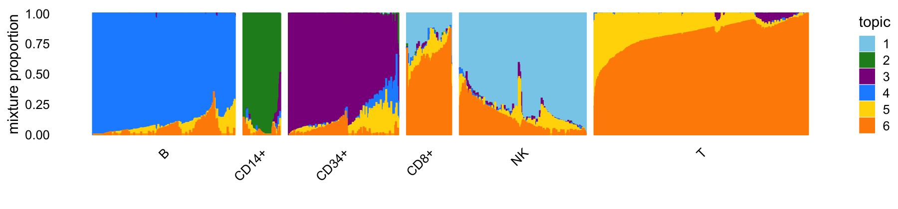
Now we can perform differential expression analysis on the CD8+ cluster (as well as the other clusters) using the diff_count_clusters function, and visualize the results using a volcano plot:
dfc_out <- diff_count_clusters(clusters,counts) volcano_plot(dfc_out,k = "CD8+",label_above_quantile = 0.995, labels = genes$symbol,max.overlaps = 10) + ggtitle("cluster CD8+")
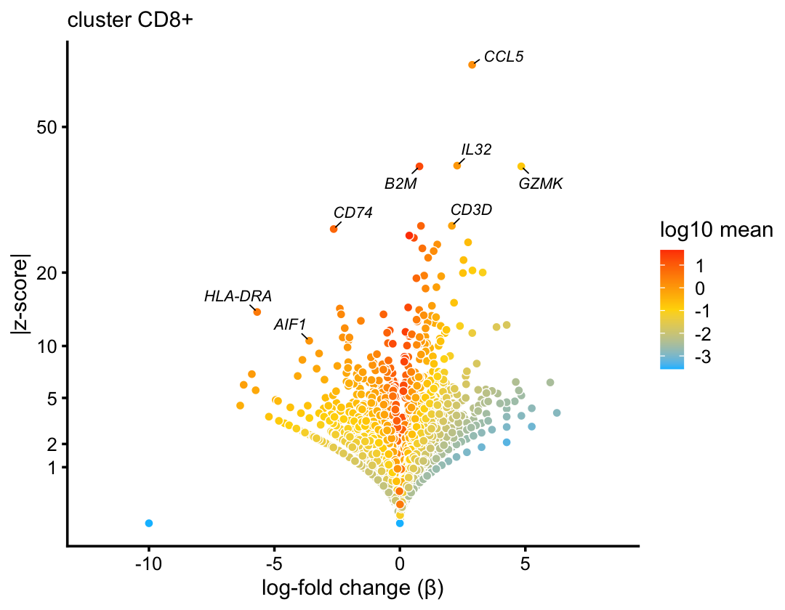
(Recall, we also used diff_count_clusters in Part 1 to perform a basic differential expression analysis.)
For example, CD8A is one of the top differentially expressed genes, a clue that this cluster corresponds to CD8+ cytotoxic T cells.
Finally, to isolate the differences in expression between topics 5 and 6 capturing heterogeneity within T cells, we perform a differential expression analysis on the T cells only:
i <- which(clusters == "T") fit_t <- select_loadings(fit,loadings = i) diff_count_t <- diff_count_analysis(fit_t,counts[i,]) volcano_plot(diff_count_t,k = 5,label_above_quantile = 0.995, labels = genes$symbol,max.overlaps = 20)
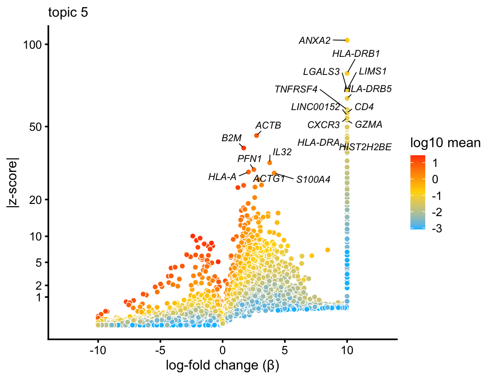
Judging by top differentially expressed genes such as CD4, topic 5 likely corresponds to CD4+/CD8+ lineage differentiation in T cells.
This is the version of R and the packages that were used to generate these results.
sessionInfo() # R version 3.6.2 (2019-12-12) # Platform: x86_64-apple-darwin15.6.0 (64-bit) # Running under: macOS Catalina 10.15.7 # # Matrix products: default # BLAS: /Library/Frameworks/R.framework/Versions/3.6/Resources/lib/libRblas.0.dylib # LAPACK: /Library/Frameworks/R.framework/Versions/3.6/Resources/lib/libRlapack.dylib # # locale: # [1] en_US.UTF-8/en_US.UTF-8/en_US.UTF-8/C/en_US.UTF-8/en_US.UTF-8 # # attached base packages: # [1] stats graphics grDevices utils datasets methods base # # other attached packages: # [1] cowplot_1.0.0 ggplot2_3.3.0 fastTopics_0.4-33 Matrix_1.2-18 # # loaded via a namespace (and not attached): # [1] httr_1.4.2 tidyr_1.0.0 jsonlite_1.6 viridisLite_0.3.0 # [5] RcppParallel_4.4.2 shiny_1.4.0 assertthat_0.2.1 mixsqp_0.3-44 # [9] yaml_2.2.0 progress_1.2.2 ggrepel_0.9.0 pillar_1.4.3 # [13] backports_1.1.5 lattice_0.20-38 quantreg_5.54 glue_1.3.1 # [17] quadprog_1.5-8 digest_0.6.23 promises_1.1.0 colorspace_1.4-1 # [21] httpuv_1.5.2 htmltools_0.4.0 pkgconfig_2.0.3 invgamma_1.1 # [25] SparseM_1.78 xtable_1.8-4 purrr_0.3.3 scales_1.1.0 # [29] later_1.0.0 Rtsne_0.15 MatrixModels_0.4-1 tibble_2.1.3 # [33] farver_2.0.1 withr_2.1.2 ashr_2.2-51 hexbin_1.28.0 # [37] lazyeval_0.2.2 mime_0.8 magrittr_1.5 crayon_1.3.4 # [41] memoise_1.1.0 mcmc_0.9-6 evaluate_0.14 fs_1.3.1 # [45] MASS_7.3-51.4 truncnorm_1.0-8 tools_3.6.2 data.table_1.12.8 # [49] prettyunits_1.1.1 hms_0.5.2 lifecycle_0.1.0 stringr_1.4.0 # [53] MCMCpack_1.4-5 plotly_4.9.2 munsell_0.5.0 irlba_2.3.3 # [57] compiler_3.6.2 pkgdown_1.5.1 rlang_0.4.5 grid_3.6.2 # [61] htmlwidgets_1.5.1 crosstalk_1.0.0 labeling_0.3 rmarkdown_2.3 # [65] gtable_0.3.0 R6_2.4.1 knitr_1.26 dplyr_0.8.3 # [69] fastmap_1.0.1 zeallot_0.1.0 rprojroot_1.3-2 desc_1.2.0 # [73] stringi_1.4.3 SQUAREM_2017.10-1 Rcpp_1.0.5 vctrs_0.2.1 # [77] tidyselect_0.2.5 xfun_0.11 coda_0.19-3